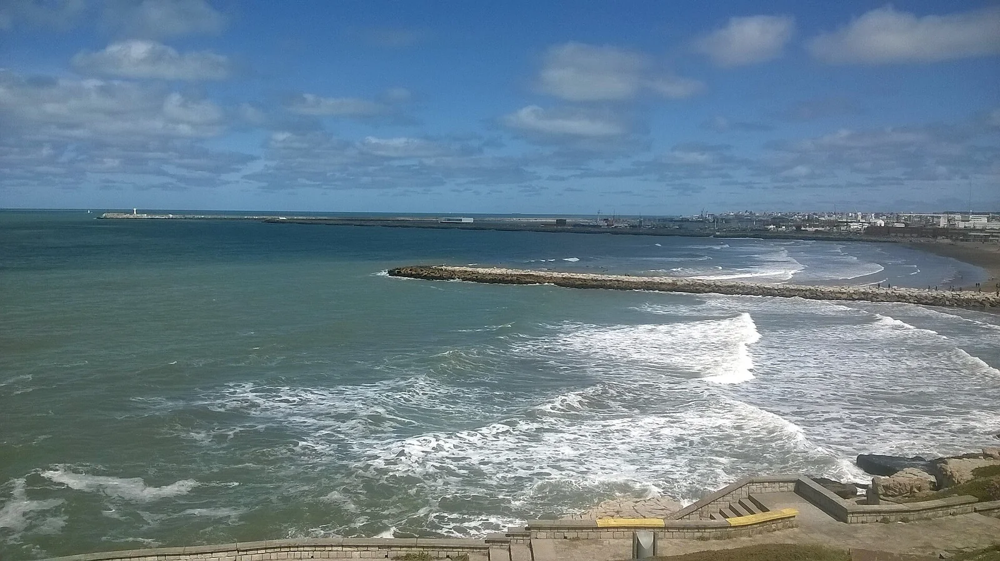

Mar del Plata
Argentine · surf

Le principal spot de surf d'Argentine, beach breaks variés le long de la grande station balnéaire.
- Lieu
- Argentine
- Niveau
- Intermédiaire
- Activités
- surf
- Type d'eau
- Mer / océan
- Coordonnées
- -38.00, -57.53 (position approximative du secteur)
Dangers à connaître
- Baïnes.
- Eau fraîche.
Le conseil d'Ocean Buddy
Spot urbain animé ; plusieurs plages selon le vent.
Ouvrir dans Ocean Buddy Télécharger sur l'App Store
Source : Description historique Ocean Buddy · vérification externe en attente.